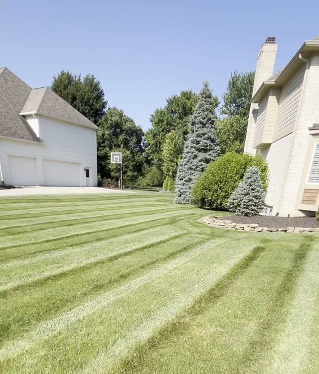
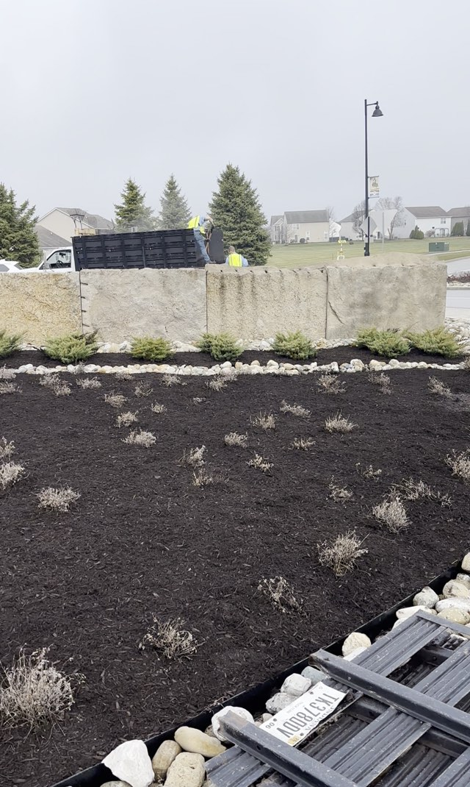
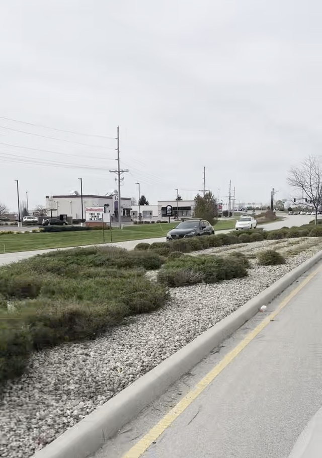
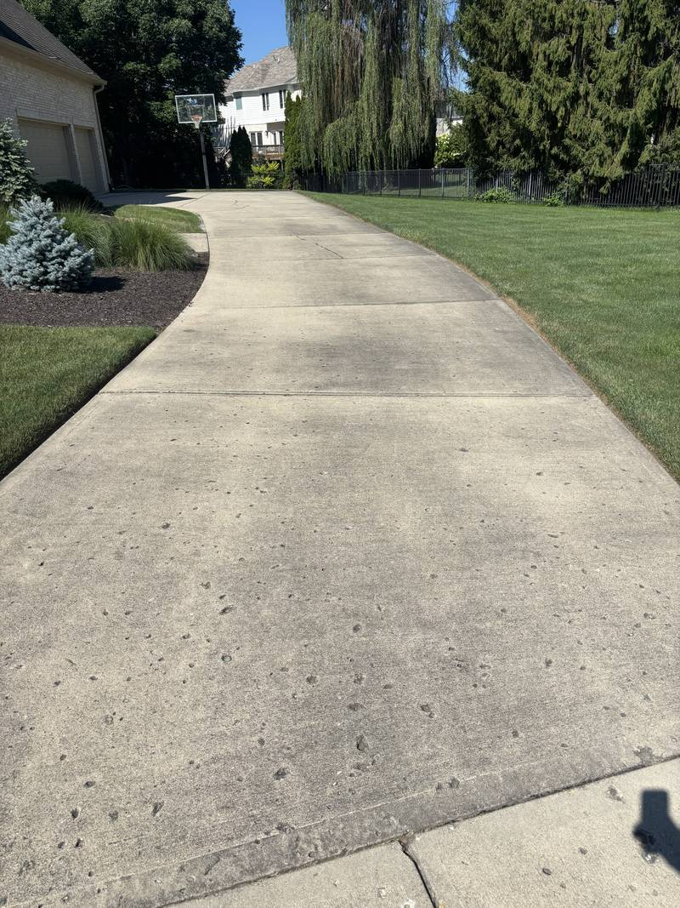
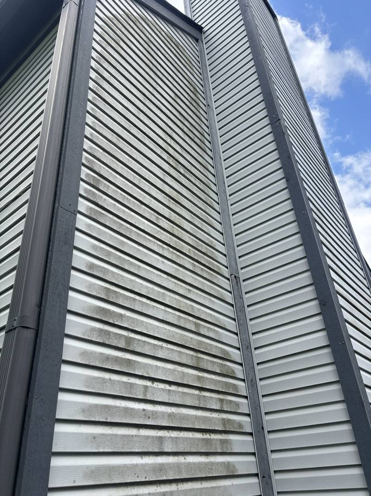
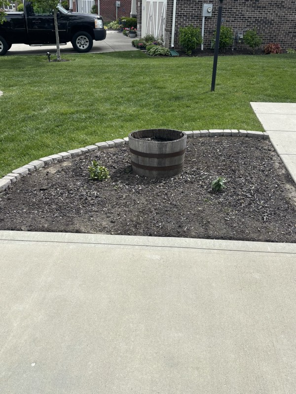
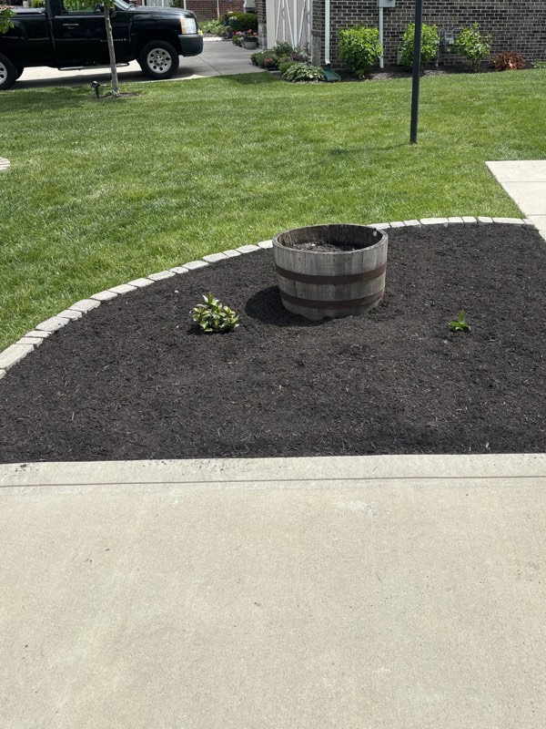
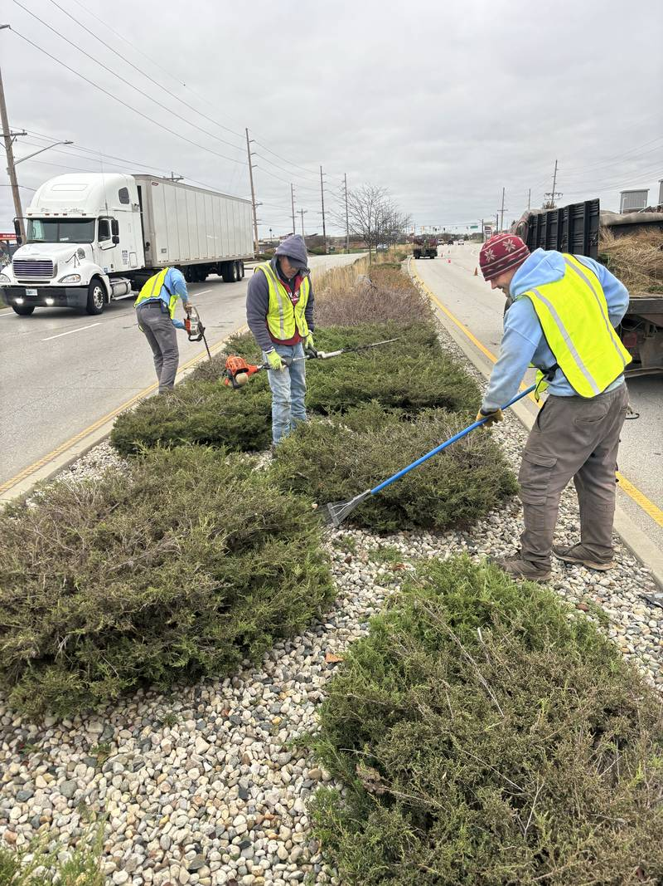
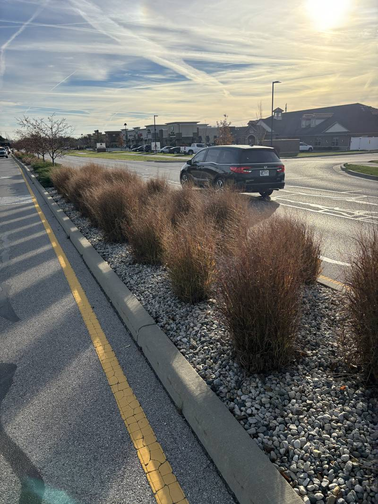

Property care,
done right.
Mowing, mulch, seasonal cleanups, leaf and snow removal, and exterior washing for homes, businesses, HOAs, and municipal properties.

What your property
needs right now
Most companies handle one slice of the year. We're on the property for all four, so nothing falls through the gap between vendors.
Reset the property
Winter leaves beds matted and edges ragged. In spring we clear all of it out, re-cut the bed lines, lay fresh mulch, and get your first cuts on the schedule.

Keep it sharp every week
Weekly mowing on a set day, clean edges, and beds that stay tidy. Summer is also the best window for washing, because siding and concrete dry fast and stay clean.
Stay ahead of the leaves
Leaves don't all come down at once, so one visit is rarely enough. We come back through the drop, finish with a full cleanup, and leave the property ready for winter.

Cleared before you leave
We clear drives, lots, and walks once snow hits an agreed depth. Commercial and HOA properties get priority routing and repeat passes while it's still falling.

Seven services,
one phone number
Our own crew does all of it. You won't be handed off to a subcontractor you've never met.
See the work in motion
Three short clips from real Cline jobs: a finished lawn, a fresh commercial mulch bed, and a maintained roadside corridor.



Filmed on the job by our own crew, not stock footage.
Drag to see
the difference
Every photo on this site is our own work, on real properties in our service area. None of it is stock photography.








Work that has to be
right in public.
Median and right-of-way work happens in live traffic, on a schedule, in high-visibility gear. HOA entrances are what residents see every day. Commercial frontage is a customer's first impression, before they reach the door.
That carries different expectations than a back yard, and we run it accordingly: scheduled rotations, written scope, and certificates of insurance on file before we start.
Scheduled rotations
Contracted properties run on a set cycle, not a call-when-you-notice basis.
Insured & documented
COIs available on request — standard for HOA boards and property managers.
Ten communities.
Six services throughout.
Mulching, seasonal cleanups, leaf removal, snow removal, soft washing, and pressure washing cover all ten communities. Mowing is limited to Whitestown, Zionsville, and West Carmel.
Four steps, no runaround
Tell us about the property
Call, text, email, or use the form. Photos help. So does telling us what's been bothering you about the property, because that's usually what we should fix first.
We look, then we quote
We can price most residential work quickly. Commercial, HOA, and municipal properties get a walkthrough, so the scope is written down and agreed before anyone starts.
You get a schedule, not a maybe
Recurring work goes on a set day. One-time work gets a real date. If weather moves us, we tell you instead of leaving you wondering.
We do the whole job
Edges, trim, and blow-off every visit, not just when there's time. If something isn't right, tell us and we'll come back.
Common questions
What areas do you serve?
Mulching, seasonal cleanups, leaf removal, snow removal, soft washing, and pressure washing are available in Whitestown, Zionsville, Indianapolis, Carmel, Westfield, Brownsburg, Lebanon, Avon, Plainfield, and Fishers. Mowing is limited to Whitestown, Zionsville, and West Carmel.
Do you work with HOAs and commercial properties?
Yes. We maintain homes, businesses, HOA common areas, and municipal properties.
Can I get more than one service on the same visit?
Yes. We can combine services such as cleanup and mulching, or soft washing and pressure washing.
How do I get a quote?
Call or text (317) 677-4709, email us, or use the contact form. Larger commercial and HOA properties may need a walkthrough.
Are you insured?
Yes. Certificates of insurance are available on request.

Let's get your property on the schedule.
Free estimates, straight answers, and a crew that shows up when we said it would.